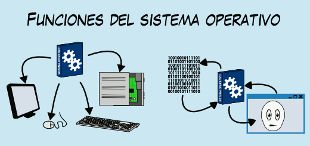

Funciones

Estudiante UNADista, no olvidemos las funciones del sistema operativo, las cuales se encuentran a su disposición en la página Wikipedia. Con esta información usted podrá conocer más detalladamente lo que sucede internamente de su teléfono celular, portatil, e incluso smartphone.
El sistema operativo es capaz de desempeñarse en varias funciones:
Gestionar la CPU: Se encarga de administrar la CPU que va a estar repartida entre todos los procesos que se estén ejecutando.
Gestionar la RAM: Para asignar el espacio de memoria a cada aplicación y a cada usuario, en caso de ser necesario. Cuando esta memoria se hace insuficiente, se crea una memoria virtual, de mayor capacidad, pero como está en el almacenamiento secundario (disco duro), es más lenta.
Gestionar el I/O: El sistema operativo crea un control unificado de los programas a los dispositivos, a través de drivers.
Gestionar los procesos: Se encarga de que las aplicaciones se ejecuten sin ningún problema, asignándoles los recursos que sean necesarios para que estas funcionen. Si una de ellas no responde, se procede a matar el proceso.
Gestionar los permisos: Garantiza que los recursos sean sólamente utilizados por programas y usuarios que tengan las autorizaciones que les correspondan.
Gestionar los archivos: Lectura y escritura en el sistema de archivos, y los permisos de acceso a ellos.
Gestionar información: El sistema operativo proporciona información, que posteriormente será utilizada a modo de diagnóstico del funcionamiento correcto del computador.